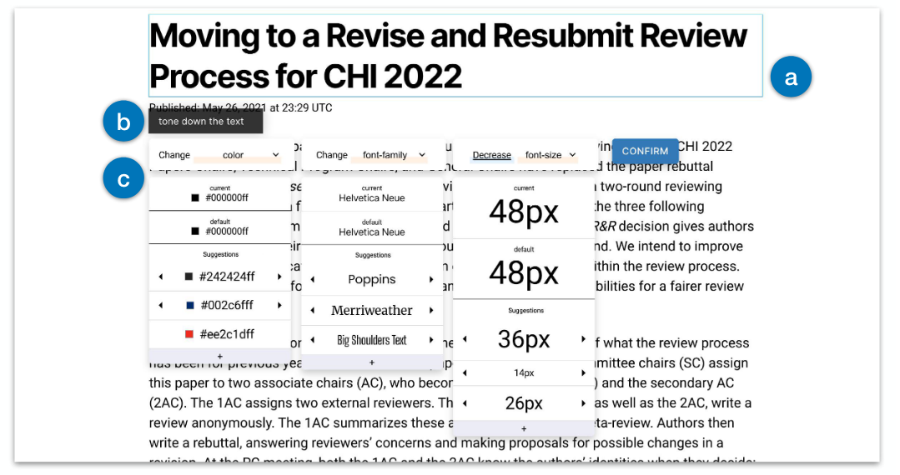
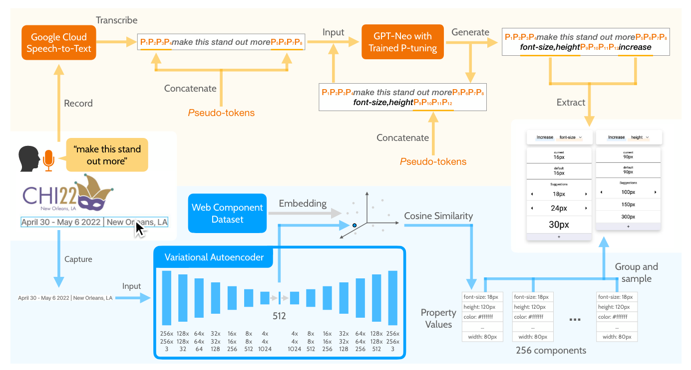
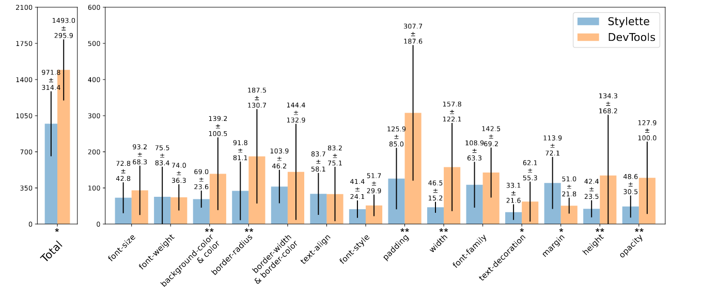
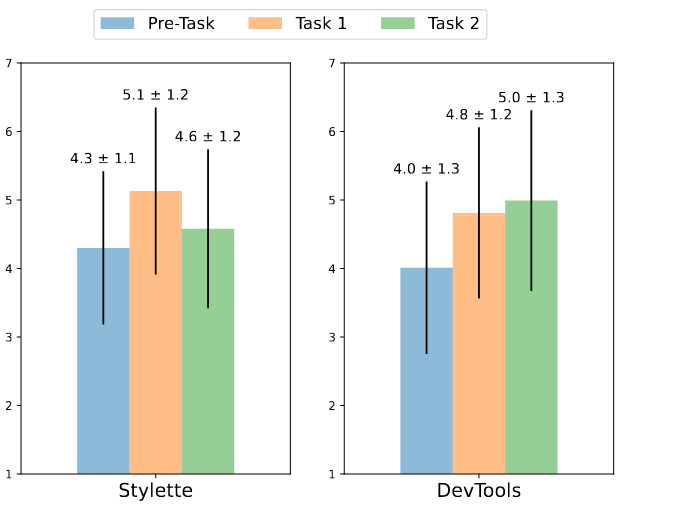

Styletee: Styling the Web with Natural Language
论文：Styletee: Styling the Web with Natural Language
作者：Tae Soo Kim, DaEun Choi, Yoonseo Choi, Juho Kim
发表：CHI 2022
终端用户可以通过浏览器的开发者工具来编辑定制网页风格，然而通常情况下终端用户缺乏把high-level的编辑目标转化为low-level的代码所需要的知识。本文提出了Stylette,一个浏览器插件来允许用户用自然语言来修改网页风格。基于用来解析用户目标的大模型，和一个含170万web组件的数据集，Stylette生成一个CSS属性和值的调色版来帮助用户实现它们的修改目标。和浏览器的开发者工具的对比实验显示Stylette可以降低用户的学习曲线，并且帮助用户花比浏览器的开发者少35%的时间。此外作者认为该工作可以拓展到其他的帮助新手快速掌握复杂软件和编程语言的场景中。
1. 介绍
1.1 背景：
网页的易塑性（malleable）的价值
通过在用户端对HTML、CSS和Javascript的修改可以改变网页。用户可以利用网页易塑性来：
- 个性化显示页面 ← this work
- 自行修复一些网页问题
- 给网页添加新的功能。
- 基于他人的作品创造自己的新网页。
利用网页的易塑性的现存方法
- 直接修改HTML、CSS和Javascript
- 优点：直接灵活
- 缺点：学习成本大
- 使用浏览器插件（e.g. Greasemonkey, Tampermonkey）
- 优点：允许用户直接应用其他用户设计的修改
- 缺点：如想要设计自己的修改，需要学习成本（修改HTML，CSS）
- 各类终端用户编码工具（e.g. VisBug）
- 优点：抽象掉了代码层，允许用户直接修改网页的视觉设计
- 缺点：要求用户做各种low-level的修改操作（e.g. 选颜色，输入值）。需要用户自己做high-level goal到low-level operation的转换。
自然语言交互界面
允许用户通过简单地表达intention的方法来执行复杂的、混合的操作。
- General Purpose NLI （e.g. Siri, Alexa）
- Task-Specific NLI (e.g. photo editing, data visualization) ← this work
- 本文抽象掉了“low-level的设计修改操作”和“代码层”
1.2 本文工作
一句话概括：探究如何利用NLI来帮助新手用户进行网页的定制化修改。
- 预实验（N=8）
- 目的：
- 探究用户在改变网页风格时会用的语言
- 探究用户希望NLI处理的结果怎样被展示
- 方法：
- 新手用户用语言来描述想要做的修改，专家用户使用浏览器开发者工具进行对应修改
- 发现：
- 用户的要求常常时模糊的（缺失细节，使用抽象词）
- 缺少经验
- 故意模糊：想要探索设计空间
- 用户的要求常常时模糊的（缺失细节，使用抽象词）
- 目的：
- 系统设计
- 用户可以点击一个网页组件，并说出想要的修改。
- 基于用户的输入，系统提供一个工具箱，包含了
- 一系列和用户请求相关的CSS属性（基于GPT-Neo的架构来根据自然语言输入推荐相关的CSS属性）
- 为每个相关的CSS属性提供可供探索的推荐值和样例（基于VAE模型来编码被点击的前端组件，从而从数据集中找到类似组件的CSS值）
- 评估
- between-subjects study (N=40)，对比本文系统和浏览器开发者工具
- 定量比较（35%faster， 80% accuracy vs 35% accuracy）
- 分析
- 使用户探索和熟悉更多的CSS属性
- 当用户更熟悉CSS时，自然语言交互方式成为限制
- between-subjects study (N=40)，对比本文系统和浏览器开发者工具
1.3 贡献
- 一个用NLI来帮助新手用户进行网页的定制化修改的系统，Stylette
- 一个结合了CV和NLP技术的计算流程，输入用户的自然语言和web组件，输出一系列相关的CSS属性和值
- 从评估实验中的发现：NLI可以如何帮助新手熟悉并执行一个之前未知的 设计/代码 任务。
2. 相关工作
网页设计和调整工具
主要有两类，一类涉及代码，一类不涉及代码
- 第一类工作：加速对代码的修改
- 例如：
- 同时展示视图和代码
- 帮助用户理解视图和代码之间的联系
- 使用众包或生成模型，提供可选的替代设计
- 缺点：
- 需要对代码的理解
- 例如：
- 第二类工作：直接修改网页视觉元素
- 例如：
- 拖拽式修改组件位置
- 窗体小工具来帮助修改设计、添加动画
- 缺点：
- 需要花时间精力选择和执行各种low-level操作来达到目标。现存一些example-based system，试图允许用户复制例子网页的风格，从而减轻这个缺点。
- 例如：
- 本工作的目标是进一步简化网页修改：通过自然语言描述改变，让用户从系统推荐选项中选择想做的具体改变。
用自然语言处理帮助设计
挑战：新手用户使用的语言（high-level）和设计工具使用的语言（low-level）不匹配。
- 几类工作：
- 根据用户的自然语言query，帮助用户找到工具对应的feature
- 用自然语言来搜索设计参考
- 基于语义词来直接生成设计作品（如图标，图片）
- 把自然语言表述转化为一系列的（动画编辑、图片编辑）操作
- 本工作通过解析模糊语句的方式来支持对网页设计的修改。
用自然语言处理来编码
挑战：降低编程门槛。
- 几类工作：
- 匹配 natural language 和 code
- 快速搜索小的代码片段
- 通过展示和描述任务自动生成小代码
- 用自然语言生成代码（GPT3）
- 匹配 natural language 和 code
本工作利用GPT3来帮助编辑CSS代码，并提供了一种用自然语言交互来帮助新手学习代码的思路。
3. 形成性研究
流程：
- 新手用户被要求观察一个他们常用的网站，提出风格修改要求
- 专家使用谷歌浏览器的开发者工具对CSS代码进行直接修改
- 用户若对修改结果不满意，可要求继续修改
- 30分钟左右的修改流程后，进行访谈，询问用户的体验
发现：
- 修改需求通常是模糊的（e.g. “more readable”，“emphasize this”，“modern”，“vivid”）
- 用户不知道怎么表达具体的操作
- 即使用户知道了具体操作的名字，也不确定选哪个更好 （e.g. “highlight”：“bolder” or “colored differently”）
- 新手用户希望专家能帮他们做一些细节性的决定
- 通过专家追问新手用户来迭代式地确定这些细节过于繁琐
- 希望直接给多种修改结果，让新手用户能直接根据结果做选择
- 自然语言不是万灵药
- 在修改迭代的后期，用户开始觉得自然语言不如直接用窗体修改工具方便
设计目标：
DG1:能解析模糊需求来生成合理的修改
DG2:提供能满足需求的多个CSS属性和值
DG3:允许用户对细节进行直接的迭代式修改（不用自然语言）
4. Stylette系统

Fig.1 stylette system
使用流程：
- 用户点击一个web 元素（Fig.1 a），用自然语言给出修改意见（Fig.1 b）
- 系统解析修改意见并生成一个widget来推荐与改修改意见相关的CSS属性
- 用户可以看到当前的属性值，默认的属性值，和系统基于数据库推荐的属性值，以及对应效果
- 用户可以探索与当前属性名相近的其他属性值
- 用户迭代修改直到确定，点击confirm键应用该修改

Fig.2 Computation Pipeline
计算流程：
- 自然语言处理部分
- 使用GPT-Neo作为生成模型
- 使用P-tuning技术来利用训练数据进行微调
- 训练数据为300条
- 只训练pseudo-tokens的Embedding
- 计算机视觉部分
- 使用VAE作为Embedding训练模型
- 训练数据为176万个components的CSS样式和图片截图
- 使用cosine similarity找到数据集中最近的256个components（为了推荐结果的合理性）
- 对这256个components对CSS属性进行聚类分组，每组挑一个作为推荐结果（为了推荐结果的多样性）
- 使用VAE作为Embedding训练模型
5. 评估
研究问题
- Stylette是否能帮助用户找到合适的CSS属性来执行想要的修改
- Stylette能否鼓励新手用户去做更多的类型的修改
- 用户对Stylette的使用如何影响他们对web设计能力的信心
评估流程（N=40）：
- 实验组用Stylette，对照组用开发者工具
- 提供简单工具教学
- Pre-task survey
- 任务1: 要求将当前网站修改成目标网站。被改变的组件会被圈出。需30分钟内改对所有component。
- Post-task survey
- 任务2: 提供几个网站图片，需要把当前网站改成这类风格。有25分钟完成该任务。
- Post-task survey
- 进行访谈
测量方式
- pre/post-task survey
- 7分制 李克特度量
- 评估自己对四种能力的自信程度
- 进行一个网页设计修改任务
- 规划对设计的改变
- 迭代式改变
- 使用给定的工具
- post survey
- NASA-TLX 问卷的六个问题
- 评估感受到的workload
- 定量测量
- 修改每个component所花的时间
- 完成整个任务所花的时间
- 属性修改的个数和多样性
- 定性测量
- 分析访谈，分类Task2中用到的修改请求
6. 结果
结果表明用户在task1中用Stylette达到了更快的速度和成功率，但在task2中没有提高生产力（属性修改的个数和多样性）。
- Task1：Well-defined Task
- Stylette组成功率80%，高于对照组（35%）
- Stylette组在各项CSS属性的修改上速度总体更快
- Stylette组感受到workload明显更小

- Task2：Open-Ended Task
- 属性修改数量没有显著差异
- Stylette组对属性对修改更具多样性
- 用户在过程中逐渐熟悉了CSS属性的名字，一部分请求变得更清晰
- Stylette组不再像task1一样明显感受到更少的time demand（花更多时间探索）
- 用户自信度
- 用stylette自信度先上升较快，然后下降
- 用DevTool自信度稳步上升

7. 讨论
- 可将Stylette作为web设计的起跳板
- 更低的使用成本
- 更多的可能性
- 用大模型来支持软件的使用
- 可以面向新软件的支持（对语料量要求低）
- 可使用新手语料来更贴近新手
- 用自然语言编码作为学习工具
- 快速熟悉，获得大量知识
- 相比DevTool，缺乏刻意学习
- 可以拓展到HTML和Javascript
8. 缺陷
- 支持CSS属性数量只有16种，且一次只能改一个
- 评估实验可能不公平：DevTool用户可能花时间探索Stylette不支持的功能
- 语料库太小，只有300条
- 未探索在真实场景中用户会怎样使用Stylette
9.优点
- 评估完善充分
- 写作逻辑清晰
- 对实验结果的解释和讨论值得学习
✉️ zjuvis@cad.zju.edu.cn